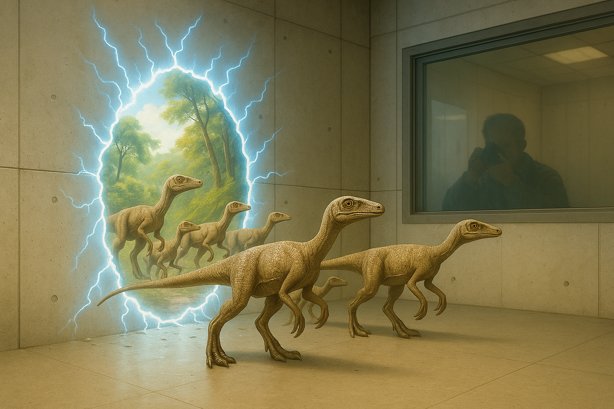

First Use of New Technology Provides Valuable Insights
After significant testing, and some errors in our trials, our technology has been deemed safe enough for use by the public.
There was some concern in early testing of the potential damages that could be caused. Some of these fears, it turns out, were warranted.
We wish to inform you, before anyone else, that during early trials there was an incident in which dinosaurs broke through a rift that was created. There was an expectation within our labs that something like this may occur and we were prepared. There was never any risk of danger to those outside the lab. The dinosaurs remained safely contained within the lab.
On a side note, compsagnathus has a taste very similar to chicken, though the texture leaves much to be desired. At least, from the methods we used for preparation.